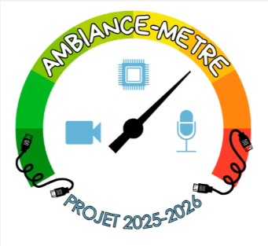
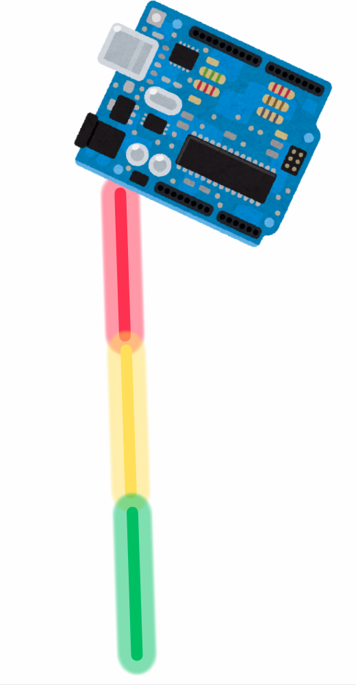
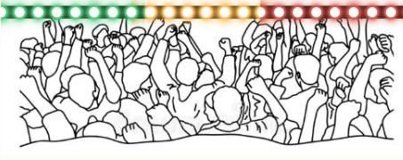

Cal'Ambiance
Un système intelligent permettant de mesurer l’ambiance d'un endroit de l’ENSC en temps réel grâce à plusieurs capteurs : microphone, caméra et ruban LED interactif.
L'objectif est de transformer des données physiques en une représentation simple, intuitive et visible instantanément.
Découvrir le projet
Présentation du projet
Dans les espaces collectifs comme un hall, une bibliothèque ou une salle commune, l’ambiance varie constamment : discussions, déplacements, activité des étudiants ou périodes de calme.
Le projet Cal'Ambiance a pour objectif d'analyser automatiquement cette activité afin de la traduire sous une forme visuelle simple et compréhensible.
Pour cela, nous avons développé un système embarqué utilisant un microcontrôleur connecté à différents modules matériels. Les informations collectées sont ensuite traitées puis affichées grâce à un ruban LED et à une interface web.
Comment fonctionne le système ?
Microphone
Caméra
Traitement
Ruban LED
Site web
Microphone
Il mesure l’intensité sonore présente dans le lieu. Plus le bruit augmente, plus l’activité détectée est importante.
Caméra
Elle permet d'ajouter une information visuelle en détectant notamment des mouvements dans l'espace observé.
Ruban LED
Il fournit un retour visuel immédiat : différentes couleurs représentent l'état d'ambiance détecté.
Qu'est-ce que l'ambiance ?
L’ambiance est une notion difficile à mesurer car elle reste en partie subjective : deux personnes peuvent avoir une perception différente d’un même lieu.
Nous avons donc choisi de transformer cette notion en indicateurs mesurables :
Ces paramètres permettent d’obtenir une estimation quantitative d’un phénomène habituellement perçu uniquement de manière humaine.

Objectifs du projet
Ce projet nous permet de travailler plusieurs domaines complémentaires tout en construisant un prototype concret et interactif.
Programmation embarquée et MicroPython
Traitement du signal sonore
Capteurs et acquisition de données
Développement web
Gestion de projet et travail en équipe